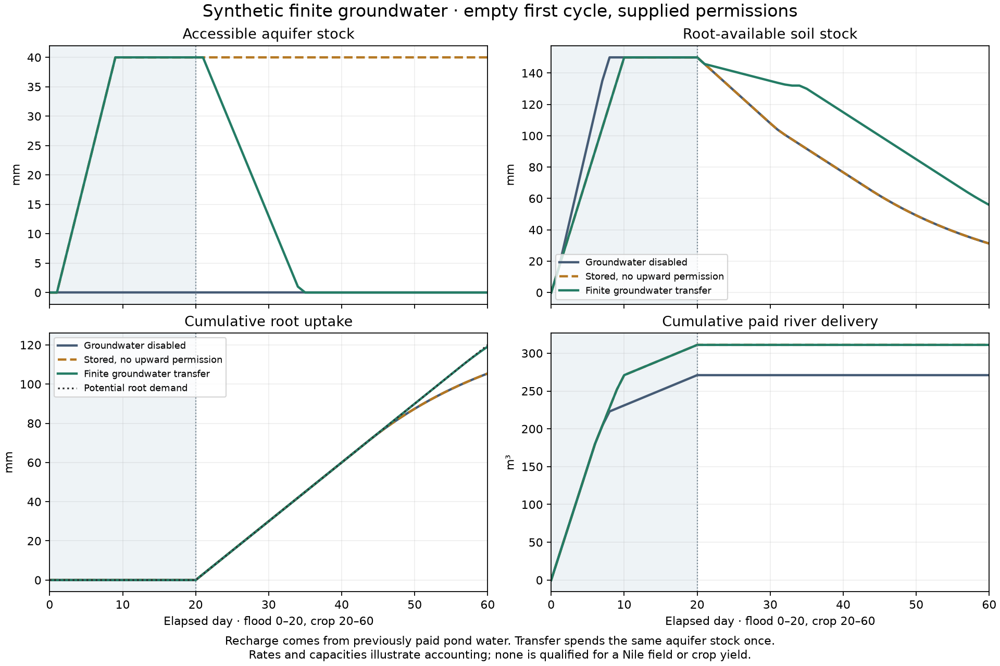

EARTH EVIDENCE · 14 NOVEMBER 2026
Groundwater transfer spends finite, paid storage
The five-stock water budget passes independent replay and exact legacy controls. These are synthetic demonstrations with supplied hydraulic permissions. No Earth groundwater fields are scored, and no yield or settlement change is adopted.
Storage and upward permission both matter
All three declared cases begin empty on the same 1,000 m² field. Twenty flood days precede forty crop days. Flood supply is 30 m³/day; crop river supply and all rain are zero. ETo is 4 mm/day, crop Kcb is 0.75, pond capacity is 40 mm and shared infiltration allowance is 20 mm/day. The illustrative soil has θFC 0.25, θWP 0.10 and a 1 m root zone. These values are synthetic inputs.
The two storage cases have 40 mm accessible aquifer capacity and a 5 mm/day recharge limit. One has no upward permission; the other permits at most 3 mm/day during the crop. Neither rate is inferred from a Nile water table or the Dutch hydraulic example.

Flood days are shaded. Empty initial stocks are included in the ledger. Separate repeated-cycle runs converge for all five stocks in two cycles; the displayed results are the empty first cycle.| Case | Recharge mm | Upward transfer mm | Final aquifer mm | Root uptake mm | Root demand mm | River delivery m³ |
|---|
| Groundwater disabled | 0.000 | 0.000 | 0.000 | 105.416 | 120.000 | 271.000 |
|---|
| Stored, no upward permission | 40.000 | 0.000 | 40.000 | 105.416 | 120.000 | 311.000 |
|---|
| Finite groundwater transfer | 40.000 | 40.000 | 0.000 | 119.140 | 120.000 | 311.000 |
|---|
Storing 40 mm costs 40 m³ of extra river delivery here. With upward permission, the aquifer empties and root uptake increases by 13.724 mm. Water stored without permission remains inaccessible. Upward transfer is internal redistribution, not an additional source in the joint river/field balance.
One ledger for pond, aquifer and soil
Each step first debits any supplied aquifer loss, then limits upward transfer by the supplied permission, remaining aquifer stock and soil deficit. Transfer fills deep available water, then the surface pool below wilting point, then top available water. Roots retain their existing restriction to available water.
Recharge draws only from the previous step's pond stock while pond and recharge permissions are open. It consumes the same infiltration allowance as soil wetting. Fresh river delivery can refill the pond but cannot recharge the aquifer until a later step. Exported percolation, overflow and pond release are not credited again or reused downstream.
The accessible aquifer store is measured above a supplied inaccessible floor. This budget does not infer water-table depth, hydraulic permission, root suction, transient flow, salinity or oxygen stress. Local soil/root and water-table evidence must qualify those inputs before regional application.
Next dependency
Qualify local hydraulic profiles, root development and suction, seasonal water tables, recharge and drainage before declaring regional groundwater experiments. Keep high-water-table crop constraints, the weather period/grid mismatch, shared Earth/fantasy weather and river inputs, Tigris and independent regions in scope. Freeze harvest translation before testing Nile gain, Mesopotamian non-inflation and whole-empire supply.
The latest regional water maps and release-3 settlements remain unchanged. Marketed share 0.3923 remains adopted; Egypt calibration still fails.